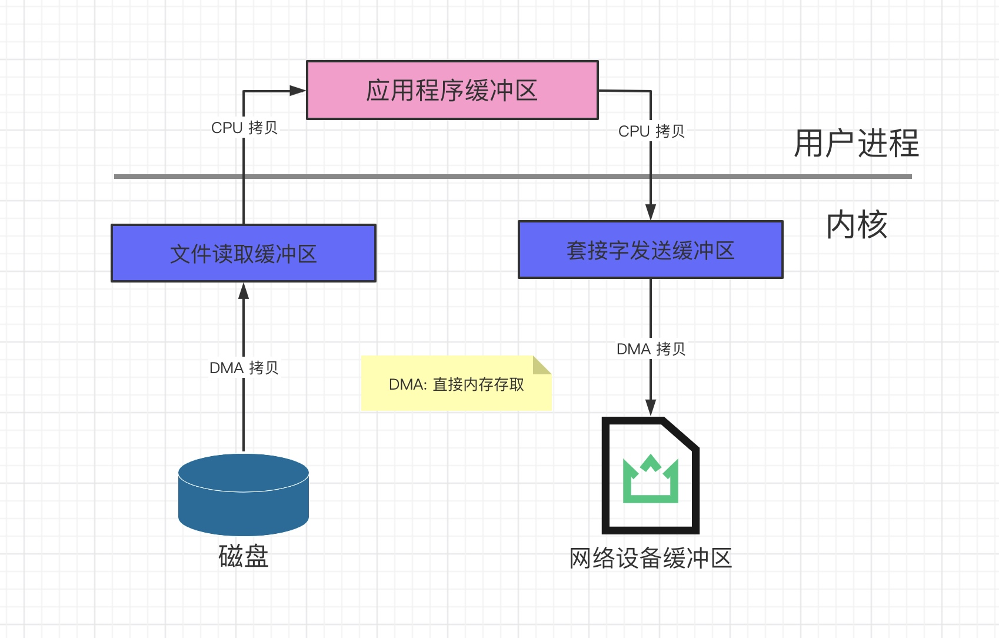
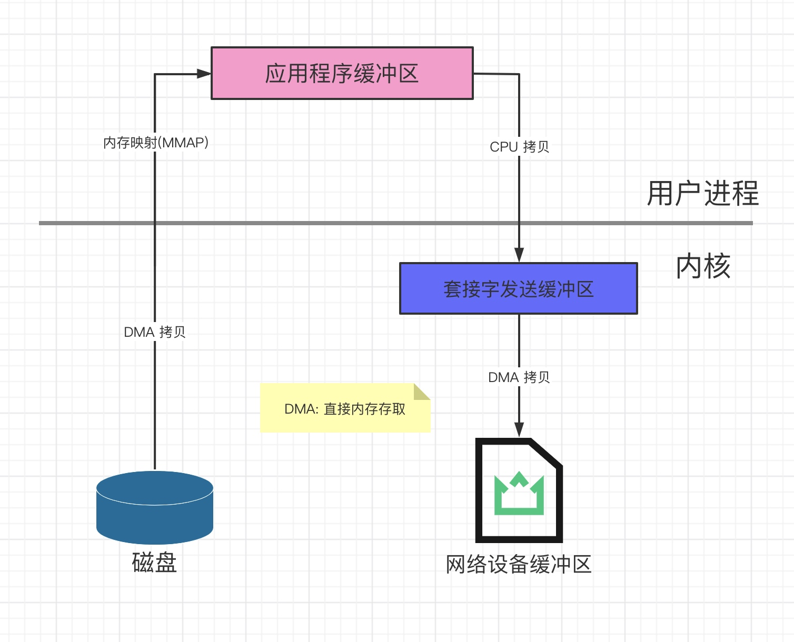
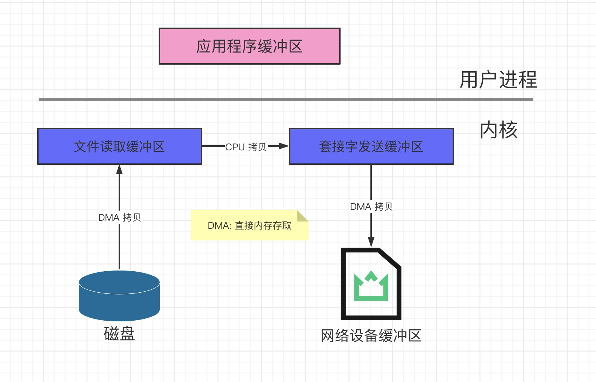
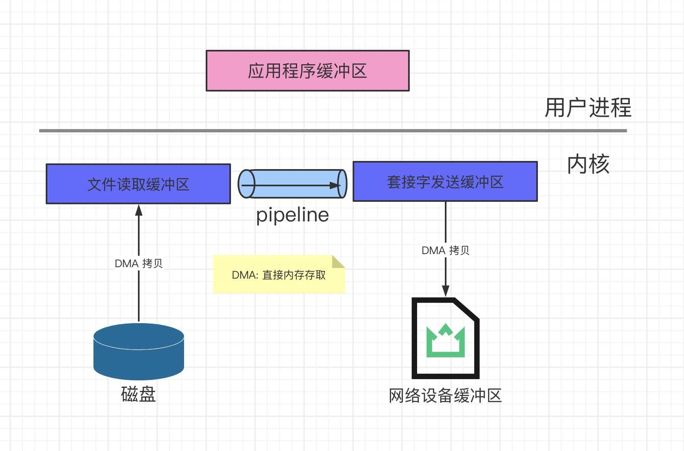

第一个问题：什么是零拷贝？
零拷贝技术是指计算机执行操作时， CPU 不需要先将数据从某处内存复制到另一个特定区域。这种技术通常用于通过网络传输文件时节省 CPU 周期和内存带宽。
- 零拷贝技术可以减少数据拷贝和共享总线操作次数，消除传输数据在存储器之间不必要的中间拷贝次数，从而有效的提高数据传输效率
- 零拷贝技术减少了用户进程地址空间和内核地址空间之间因为上下文切换而带来的开销
广泛的说就是减少不必要的拷贝即被称为零拷贝
Linux 的 IO 机制与 DMA
在早期的计算机中，用户进程需要读取磁盘数据，需要 CPU 中断和 CPU 参与，因此效率比较低，发起 IO 请求，每次的 IO 中断，都带来了 CPU 的上下文切换，因此出现了 DMA 技术
DMA(Direct Memory Access，直接内存存取)是所有现代电脑的重要特色，它允许不同速度的硬件装置来沟通，而不需要依赖于 CPU 的大量中断负载。
DMA 控制器接管了数据读写请求，减少了 CPU 的负担，这样一来 CPU 可以高效工作了。现代硬盘基本都支持 DMA
实际 IO 读取涉及两个过程：
- DMA 等待数据准备好，把磁盘数据读取到操作系统内核缓冲区
- 用户进程将内核缓冲区的数据 拷贝到用户空间
这两个过程都是阻塞的。
传统数据传送机制
比如：读取文件，再用 socket 发送出去，实际经过四次 copy。
伪代码如下：
buffer = File.read()
Socket.send(buffer)
- 第一次：将磁盘文件读取到操作系统内核缓冲区
- 第二次：将内核缓冲区的数据拷贝到应用程序的 buffer
- 第三次：将应用程序 buffer 中的数据拷贝到 socket 网络发送缓冲区(属于操作系统内核的缓冲区)
- 第四次：将 socket buffer 的数据拷贝到网卡，由网卡进行网络传输
图示如下：
传统数据传送机制
分析上述的过程，虽然引入 DMA 来接管 CPU 的中断请求，但四次 copy 是存在“不必 要的拷贝”的。实际上并不需要第二个和第三个数据副本。应用程序除了缓存数据并将其传输回套接字缓冲区之外什么都不做。相反，数据可以直接从读缓冲区传输到套接字缓冲区
显然，第二次和第三次数据 copy 其实在这种场景下没有什么帮助反而带来开销，这也 正是零拷贝出现的背景和意义。
传统的数据传送所消耗的成本: 4 次拷贝，4 次上下文切换。
Linux 支持的零拷贝
零拷贝的目的：减少 IO 流程中不必要的拷贝，当然零拷贝需要操作系统的支持。
mmap内存映射
首先了解一下 mmap 是什么，能做什么
硬盘上文件的位置和应用程序缓冲区(application buffers)进行映射(建立一种一一对应 关系)，由于 mmap()将文件直接映射到用户空间，所以实际文件读取时根据这个映射关系， 直接将文件从硬盘拷贝到用户空间，只进行了一次数据拷贝，不再有文件内容从硬盘拷贝到 内核空间的一个缓冲区。
mmap零拷贝
再次看下mmap的数据传输所消耗的成本：3次拷贝(1次 CPU 拷贝，2次 DMA 拷贝)和 4 次上下文切换
sendfile
linux 2.1 支持的 sendfile，当调用 sendfile()时，DMA 将磁盘数据复制到 kernel buffer，然后将内核中的 kernel buffer 直接拷贝到 socket buffer;
但是数据并未被真正复制到 socket 关联的缓冲区内。取而代之的是，只有记录数据位置和长度的描述符被加入到 socket 缓冲区中。DMA 模块将数据直接从内核缓冲区传递给协议引擎，从而消除了遗留的最后一次复制。
一旦数据全都拷贝到 socket buffer，sendfile()系统调用将会 return、代表数据转化的完成。socket buffer 里的数据就能在网络传输了。
sendfile
sendfile 会经历:3 次拷贝(1 次 CPU 拷贝,2 次 DMA 拷贝)和2次上下文切换
splice
Linux 从 2.6.17 支持 splice
数据从磁盘读取到 OS 内核缓冲区后，在内核缓冲区直接可将其转成内核空间其他数据 buffer，而不需要拷贝到用户空间。
如下图所示，从磁盘读取到内核 buffer 后，在内核空间直接与 socket buffer 建立 pipe 管道。
和 sendfile()不同的是，splice()不需要硬件支持。
注意 splice 和 sendfile 的不同，sendfile 是将磁盘数据加载到 kernel buffer 后，需要一次 CPU 拷贝，拷贝到 socket buffer。而 splice 是更进一步，连这个 CPU 拷贝 也不需要了，直接将两个内核空间的 buffer 进行 pipe。
splice
splice 会经历 2 次拷贝: 0 次 cpu 拷贝 2 次 DMA 拷贝;
总结 Linux 中零拷贝
最早的零拷贝定义来源于 Linux 2.4 内核新增 sendfile 系统调用，提供了零拷贝。
磁盘数据通过 DMA 拷贝到内核 态 Buffer 后，直接通过 DMA 拷贝到 NIO Buffer(socket buffer)，无需 CPU 拷贝。这也是零拷贝这一说法的来源。这是真正操作系统意义上的零拷贝(也就是狭义零拷贝)。
但是我们知道，由 OS 内核提供的 操作系统意义上的零拷贝，发展到目前也并没有很 多种，也就是这样的零拷贝并不是很多;
随着发展，零拷贝的概念得到了延伸，就是目前的减少不必要的数据拷贝都算作零拷贝 的范畴。